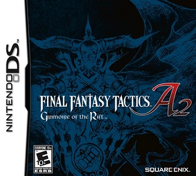

Este fue mi juego favorito durante toda mi infancia recuerdo pasar este juego al menos unas 4 veces pero nunca logre pasar el mayor desafio que el juego podia ofrecer siendo una torre donde todos los enemigos tenian el nivel maximo, en este juego comienzas en el mundo real pero despues de ser castigado por llegar tarde tu profesor te castiga haciendote limpiar la biblioteca pero en ella te encuentras un libro en blanco y al escribir tu nombre en el eres teletransportado a un mundo de fantasia en donde conoces al grupo principal cid el lider del grupo al que te unes, abel una ladrona que te roba un tesoro y luego la capturas,zan un moguri bardo que toca melodias para el grupo etc, su combate es algo diferente a los demas final fantasy debido a que es en un mapa por cuadros, ademas de que al inicio de cada combate te dan una restricción que al cumplirla te dan recompensas, fomentando que no uses siempre la misma estrategia ya que puedes quebrar la restricción y ya no puedes revivir a tus compañeros.
